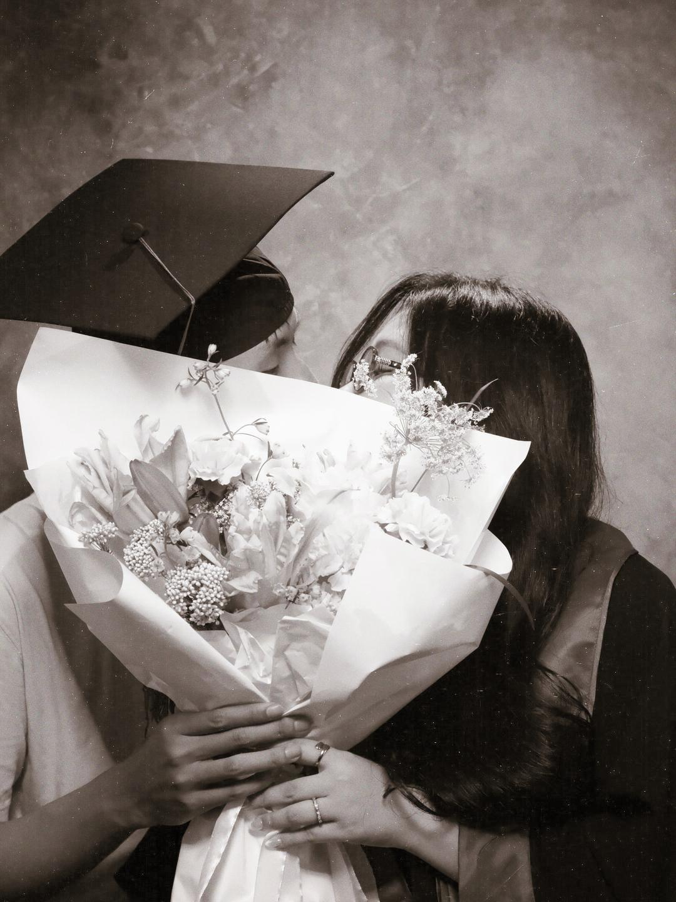

To you, my love
Bà xã ui,
Vậy là bà xã của anh đã chính thức tốt nghiệp rùi, yayyyyy!
Mỗi lần nghĩ lại, anh vẫn thấy vui, hạnh phúc và tự hào về em nhiều lắm, bà xã của anh <3.
Anh vui vì đây là một ngày thật quan trọng của em, và anh được nhìn thấy bà xã của anh tỏa sáng, rực rỡ trong ngày đặc biệt ấy. Anh hạnh phúc vì đã được đồng hành cùng em trên hành trình này, từ đầu — hay là từ giữa giữa một chút hì hì — cho đến tận những khoảnh khắc cuối cùng.
Từng khoảng thời gian cùng nhau planning, chạy task, động viên nhau, cùng vượt qua khó khăn, cùng ngồi lại để tìm cách giải quyết mọi thứ; rồi cả những lúc mệt mỏi, vui vẻ và cả buồn bã nữa. Chính những khoảnh khắc ấy đã làm cho hành trình này trở nên đáng nhớ hơn, sâu sắc hơn, và cũng từ đó anh càng nhìn thấy rõ hơn sự kiên trì, cố gắng cùng tinh thần trách nhiệm của em. Vì vậy, anh thật sự cảm thấy tự hào về em rất nhiều. Bà xã của anh giỏi lắm, nên em cũng hãy luôn tự tin vào chính mình nhiều hơn nữa nhé (^-^).
Khi viết lại những dòng này, anh lại thấy lâng lâng niềm vui như lúc biết điểm, lúc mọi thứ được chốt xong, lúc cùng em chuẩn bị cho buổi lễ, và cả lúc được dự lễ tốt nghiệp cùng em. Anh cảm thấy mình thật may mắn vì đã được có mặt và đồng hành cùng em trong một chặng đường ý nghĩa như vậy.
Có thể phía trước sẽ còn nhiều thử thách và khó khăn, nhưng anh tin rằng với sự cố gắng, trách nhiệm, sự thông minh và trái tim mạnh mẽ của em, bà xã của anh sẽ đều vượt qua được hết thảy \(^-^)/.
Hãy cho anh được tiếp tục ở bên cạnh để đồng hành, lắng nghe, yêu thương, chăm sóc và sẻ chia cùng bà xã trên hành trình của em nhé. Anh yêu em nhiều lắm, bà xã của anh.
Ông xã mập của bà xã